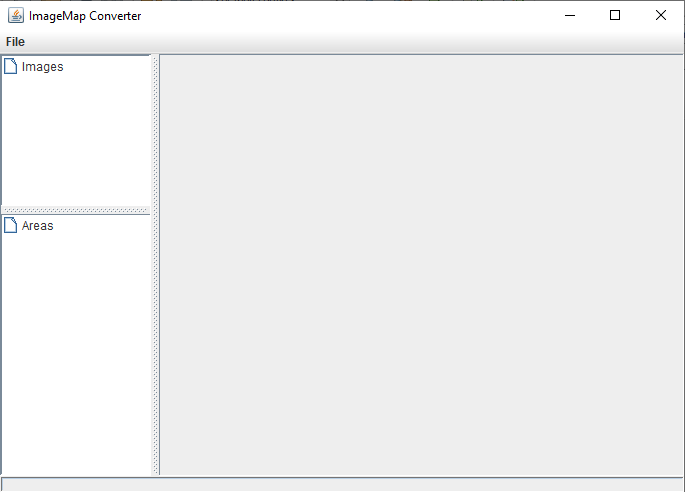
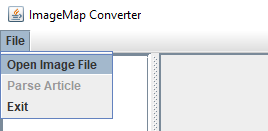
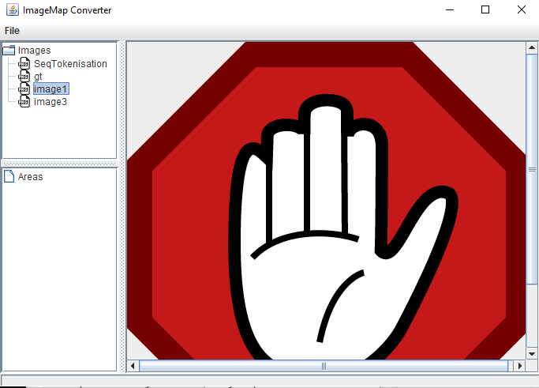
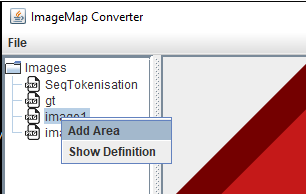
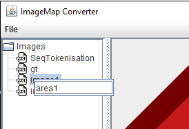
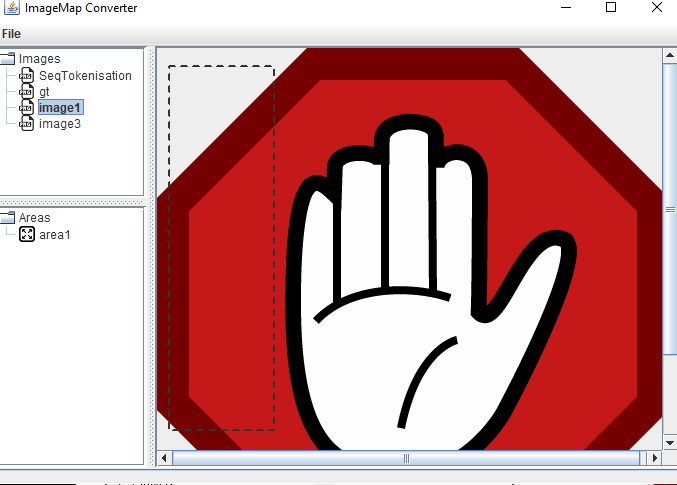
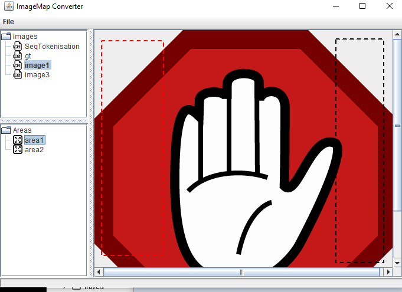
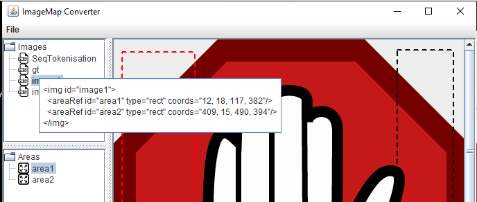
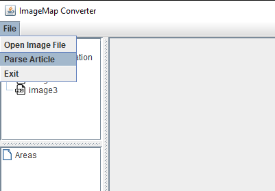

Home
Categories
Dictionary
Download
Project Details
Changes Log
What Links Here
How To
Syntax
FAQ
License
Image map converter
1 Dependencies
2 Overview of the GUI
3 Working with an image definition file
3.1 Opening an image definition file
3.2 Adding an areaRef zone
3.3 Editing areaRef zones
3.4 Getting the img definition
3.5 Opening an article with an existing image map
4 See also
2 Overview of the GUI
3 Working with an image definition file
3.1 Opening an image definition file
3.2 Adding an areaRef zone
3.3 Editing areaRef zones
3.4 Getting the img definition
3.5 Opening an article with an existing image map
4 See also
The core zip file contain a
The selected zone will be a rectangle zone in the image, which can be used in an
To use the application, just double-click on the jar file.
The ImageMapConverter tool depend on the MDIUtilities library. Therefore you must be sure that the
The image will appear on the right area, and the top left area will present the list of images defined in this file:
Then set the name of the area (which is the name of the linked id):
Then you can draw the rectangle area using the mouse on the right area presents the image. The bottom left area will present the new areaRef:
It is possible to remove an areaRef, or redefine its associated rectangle, by right-cliking on the areaRef on the bottom left area.
The tool copy this content in the system clipboard, you can then paste it on your images definition xml file.
The tool will look for images for which their id is both present in the top left area and in the selected article, and have a map of
The content of img elements which have a map of areas will be used to set the areas in the tool for this image.
ImageMapConverter.jar jar File which allows to compute the coordinates to use for linking on an image area.The selected zone will be a rectangle zone in the image, which can be used in an
areaRef element.To use the application, just double-click on the jar file.
Dependencies
Main Article: distribution
The ImageMapConverter tool depend on the MDIUtilities library. Therefore you must be sure that the
lib directory is in the same directory as the directory where you have put the jar file (as it is the case in the distribution).
Overview of the GUI
The GUI has three area:- The top left area presents the list of images defined in the selected image file
- The bottom left area presents the list of areaRef defined for the selected image file
- The right area presents the image and its defined areaRef zones

Working with an image definition file
Opening an image definition file
To open an image file, use the File => Open Image File menu:
The image will appear on the right area, and the top left area will present the list of images defined in this file:

Adding an areaRef zone
To add an areaRef zone, right-click on the image on top left area:
Then set the name of the area (which is the name of the linked id):

Then you can draw the rectangle area using the mouse on the right area presents the image. The bottom left area will present the new areaRef:

Editing areaRef zones
The image on the right area of the interface present the rectangles for all areaRef zones. If you select a zone on the bottom left area, this zone will be highlighted in red on the image:
It is possible to remove an areaRef, or redefine its associated rectangle, by right-cliking on the areaRef on the bottom left area.
Getting the img definition
To get the img definition with all its associated areaRef, you can right-click on the areaRef on the bottom left area:
The tool copy this content in the system clipboard, you can then paste it on your images definition xml file.
Opening an article with an existing image map
After you have opened an Image definition file, you can open an article definition with an existing image map by selecting the File => Parse Article menu:
The tool will look for images for which their id is both present in the top left area and in the selected article, and have a map of
areaRef elements in the article: A list of areas will be created for these images.The content of img elements which have a map of areas will be used to set the areas in the tool for this image.
See also
- img element: This article explains the how to use the img element
- areaRef element: This article explains the how to use the areaRef element
×

Categories: Syntax | Tools